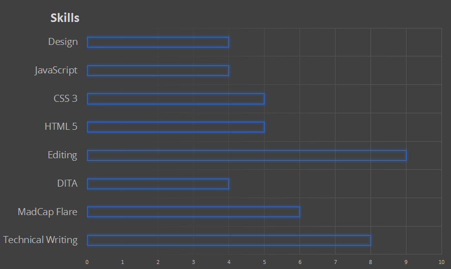

Technical writer by-day, web developer by-night!
I am Carl DeBeer and I spend my days creating technical documentation in the mobile device industry. My documentation experience covers a wide-range of skills, tools, and audiences. I've only recently started my web development journey hoping to bring technical documentation and web development together to provide quick and easy help online!
^ Back to the TopI find passion in creating focused documentation that provides information to users in the easiest way. The goal of all documentation is to enable people to through accurate information and instruction.
I have 4 years of experience in technical documentation for software companies. Most of that is in the mobile industry focused on enterprise-level software. Technical writing for mobile involves constantly updating documentation and adapting documentation to a changing industry. Nothing changes faster than mobility.
Recently, my company moved to DITA for all our content. This transaction presents challenges as DITA requires strict adherence to its guidelines. As we had never followed any architecture before with our documentation, over 90% of our content required some level of rewriting. Using the DITA guidelines for content, task, and reference topics allows you to format your information so readers know what a topic is trying to tell them. While frustrating with its restrictions, DITA is improving our documentation for our end users.
I primarily write my documentation using MadCap Flare. This help authoring tool allows us to create both PDFs and online help from a single source. I could not dream of managing a content database as large as ours without Flare! The tool is easy to use after a small learning process.
^ Back to the TopI have only recently begun learning web development. I initially started exploring HTML, CSS, and JavaScript as ways to improve my online help. Mobile-first web development is the way of the future, and documentation needs to adapt to mobile readers. You cannot expect to meet customer needs without a responsive help system that reads well on any device.
The combination of web development skills and technical writing allows me to keep my documentation cool, hip, hot, fleek, or any other terms used to describe something up-to-date and useful.
^ Back to the TopAs a wise instructor told me, you can never stop learning as you cannot possibly know everything. I know that my career is a journey filled with learning.
That being said, it's helpful to know where I gauge my skill level in technical writing and front end web development.
 ^ Back to the TopBelow are examples of my work in technical writing and web develop. Please explore these samples and let me know if you have any feedback!
Find me on LinkedIn and Twitter!